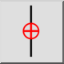
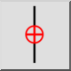
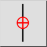
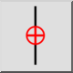

Ограничить вертикально
Toolbar / Icon:
 

Menu: Привязка > Ограничить вертикально
Shortcut: E, V
Commands: restrictvertical | ev
Это автоматический перевод.
Toolbar / Icon:
 

Menu: Привязка > Ограничить вертикально
Shortcut: E, V
Commands: restrictvertical | ev
Description:
Ограничивает курсор по вертикали той же точкой X, что и относительная нулевая точка.